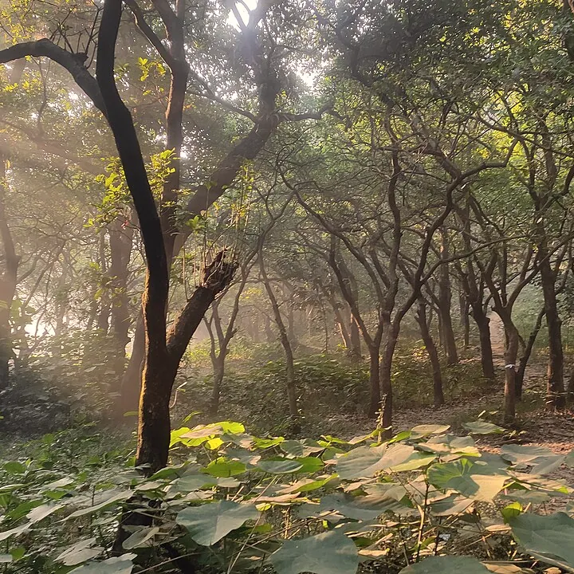

सभी थेरेपीआहार और प्रकृति
प्राकृतिक चिकित्सा
पृथ्वी, जल, वायु, अग्नि और आकाश शरीर की अपनी शक्ति को सहारा देते हैं। प्रकृति के निकट सरल जीवन ही इसकी राह है।

यह कैसे सहायक है
- पूरे व्यक्ति को ध्यान में रखता है
- प्राकृतिक शुद्धि में सहायक
- पाचन में सहायक
- स्वस्थ वज़न में सहायक
- त्वचा की देखभाल
- बेहतर नींद में सहायक
- मन को शांति देता है
हम क्या प्रदान करते हैं
- आहार चिकित्सा
- जल चिकित्सा
- मिट्टी चिकित्सा
- उपवास चिकित्सा
- योग और प्राणायाम
- मसाज थेरेपी
आपके लिए क्या उपयुक्त है, हमारे चिकित्सक से पूछें।
पंचतत्व
- पृथ्वीमिट्टी चिकित्सा
- जलजल चिकित्सा
- वायुश्वास और प्राणायाम
- अग्निसूर्य चिकित्सा
- आकाशउपवास और हल्का आहार
इस साइट की जानकारी सामान्य स्वास्थ्य जागरूकता के लिए है। यह रोग-निदान या ठीक होने का वादा नहीं है और चिकित्सकीय सलाह का विकल्प नहीं है। कृपया अपना निर्धारित इलाज जारी रखें और योग्य डॉक्टर से सलाह लें। हमारी सेवाएँ योग्यता और क़ानूनी दायरे के भीतर दी जाती हैं। प्रतीकात्मक चित्र.